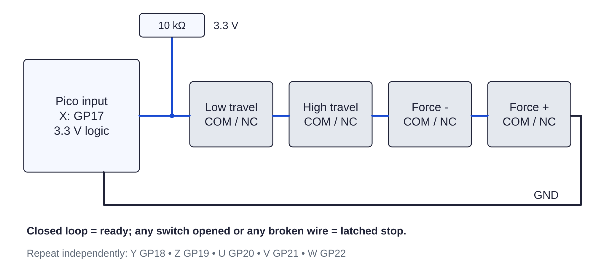

Controller / limits124 / 179
Wire six closed loops
Four normally closed contacts serve each axis: two travel ends and two opposed force-link trips. Opening any contact or wire stops every axis.
Add12 travel + 12 overload NC switches · six 10 kΩ pull-ups · six labeled loops
Tools / setupUSB and 24 V unplugged · meter in continuity mode

- For X, route GP17 → low travel COM/NC → high travel COM/NC → overload− COM/NC → overload+ COM/NC → GND.
- Repeat independently on Y GP18, Z GP19, U GP20, V GP21 and W GP22.
- Add a separate 10 kΩ pull-up from each input to 3.3 V.
- Press each switch separately while metering its loop; release it and check continuity returns.
Ready when
Each of the 24 switches opens its assigned loop by itself. All six loops are closed at the seated central pose. A switch that does not open its loop is bypassed or uses NO. Correct COM/NC routing; do not bridge the failed loop.